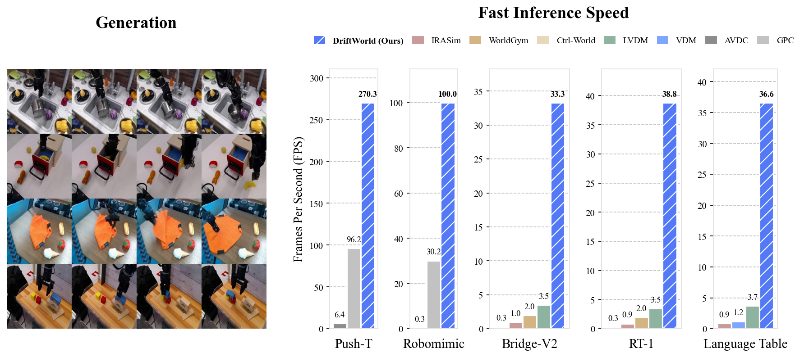
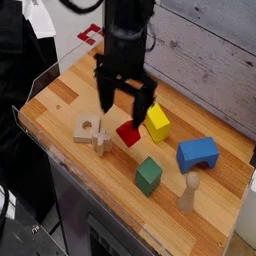
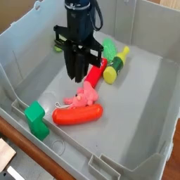
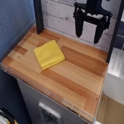
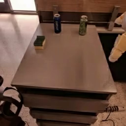
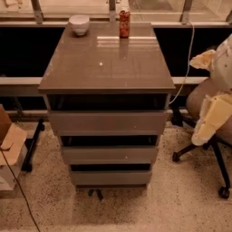
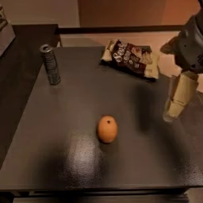
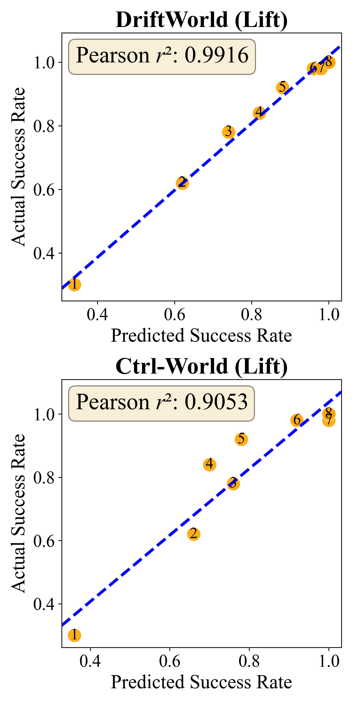

Bridge-V2
Abstract
Predictive world models enable robots to plan by imagining the outcomes of their actions, but their value for control hinges on generating many rollouts quickly. This creates a bottleneck for diffusion-based world models: multi-step sampling makes each rollout expensive, limiting large-scale action search at inference time. We introduce DriftWorld, an action-conditioned world model based on drifting generative models. Rather than denoising iteratively at inference, DriftWorld learns an action-conditioned drift during training, allowing it to generate future frames from the current observation and a candidate action sequence in a single forward pass at 30+ fps, which is 17× faster on average than diffusion-based baselines. We evaluate DriftWorld on standard vision-based robotic manipulation benchmarks, including Bridge-V2, RT-1, Language Table, Push-T, and Robomimic. By producing rollouts that are both accurate and fast, DriftWorld achieves state-of-the-art decision-making performance with far less inference time than diffusion-based world model baselines. Beyond online control, DriftWorld can also serve as an offline simulator for ranking real-world robot policies, with rollout-based scores correlating with ground truth at up to 0.99. These results show that drifting models are a strong fit for robot world modeling, where fast, high-quality imagination directly supports planning and policy evaluation.

Demos on Bridge-V2 and RT-1
DriftWorld generates different videos from the same initial frame based on the actions taken. Select an action sequence below to view the corresponding generated video. (We provide a text description of the actions for simplicity.)
Bridge-V2: Initial frame

Towards:
Generated video
Bridge-V2: Initial frame

Towards:
Generated video
Bridge-V2: Initial frame

Wipe:
Generated video
RT-1: Initial frame

Action:
Generated video
RT-1: Initial frame

Action:
Generated video
RT-1: Initial frame

Action:
Generated video
Visualization of World Modeling
DriftWorld matches or outperforms action-conditioned world model baselines in terms of visual generation quality, while operating at a fraction of the inference time.
Generated Videos on Real Robot Datasets: Bridge-V2, RT-1, and Language Table
DriftWorld generates videos that closely match the ground truth, at inference speeds of 33.3, 38.8, and 36.6 fps for Bridge-V2, RT-1, and Language Table on a single H100 GPU.
Generated Videos on Other Robotic Manipulation Tasks
DriftWorld generates videos that closely match the ground-truth simulator across the Robomimic Can, Robomimic Lift, and Push-T tasks, including both single-view and two-view generation settings. The inference speed is 100.0 and 270.3 fps on Robomimic and Push-T, respectively.
Inference-Time Policy Improvement
DriftWorld can be used to improve a base policy at inference time by rolling out multiple action proposals in the world model. The highest-reward rollout (green) is selected, steering the policy toward better outcomes. DriftWorld only takes a fraction of the inference time of standard diffusion models, making it practical and efficient for online control.
Policy Evaluation
DriftWorld serves as an accurate offline simulator for policy evaluation, successfully predicting both the absolute performance and relative ranking of policies. Our model achieves high correlation coefficients of 0.9916, 0.9250, and 0.9515 between policy performance in the world model and ground-truth performance on Robomimic Lift, Robomimic Can, and Push-T tasks, respectively.
Robomimic Lift — Simulating Policy Rollouts in the World Model

| Ground Truth | Ctrl-World | DriftWorld (Ours) |
|---|---|---|
Interactive Demo
In the live demo below, you can interact with DriftWorld in real time. Switch between the Language Table and Push-T tabs, click Connect, and use the arrow keys to move the robot gripper. Every frame is generated with a single forward pass on an NVIDIA L4 GPU.
Info: When the status changes from Connecting to Loading, you can start pressing the arrow keys. Note that the first key press takes a moment to respond since the model and server are warming up. After that, the demo streams smoothly, and the status becomes Live.
Note: The demo may be slower or unavailable due to resource limitations. To keep it free to run, each session lasts up to 2 min and ends after 30 sec of inactivity — just click Connect again to restart.
Click Connect to start the live demo